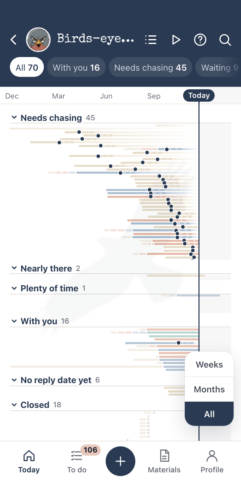
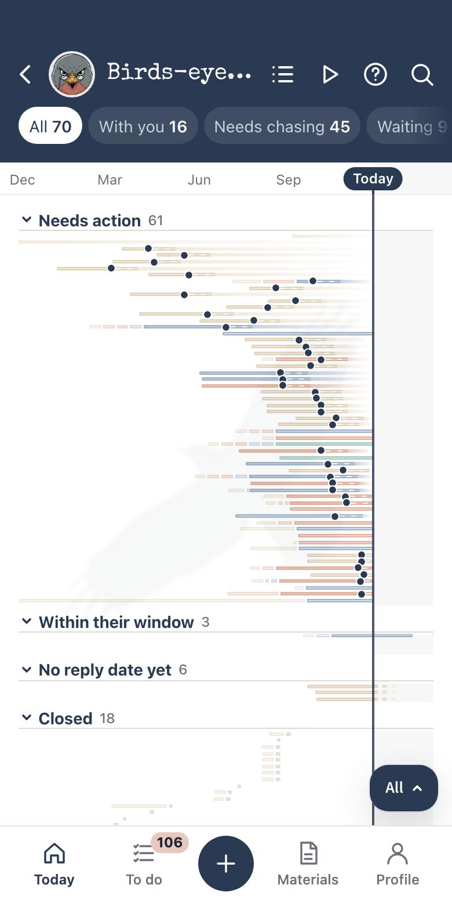
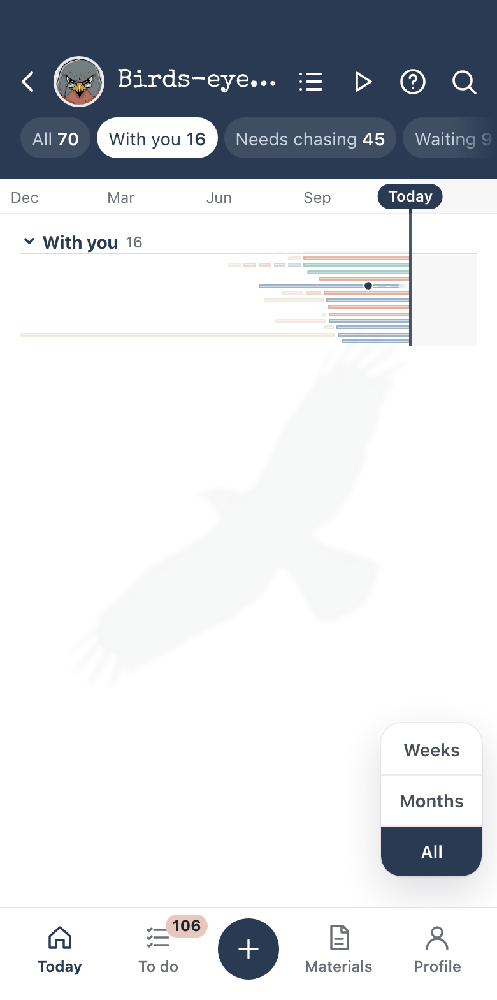
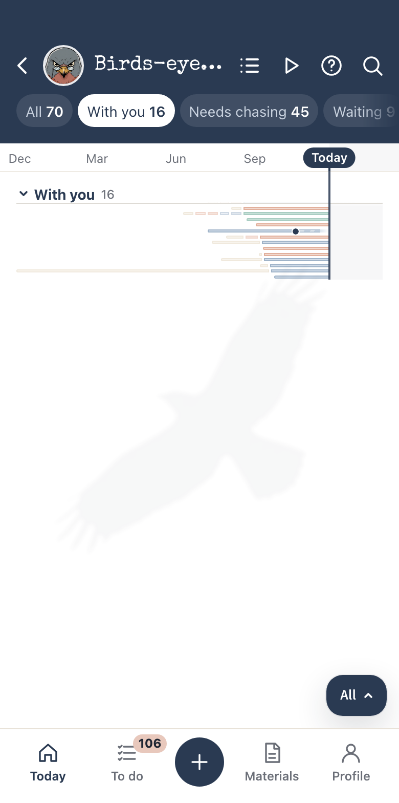
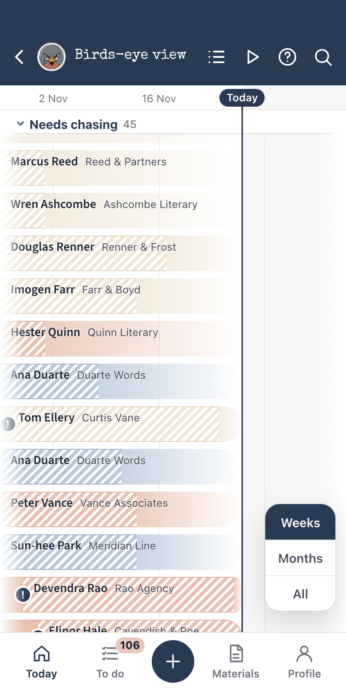
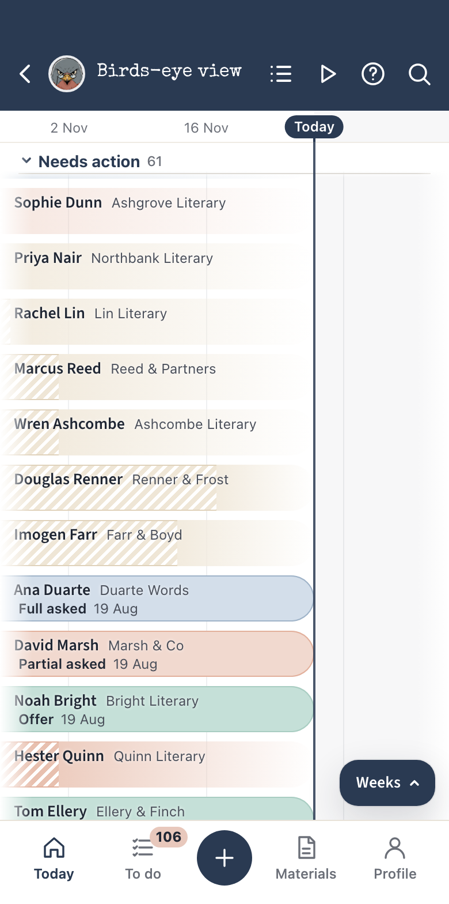
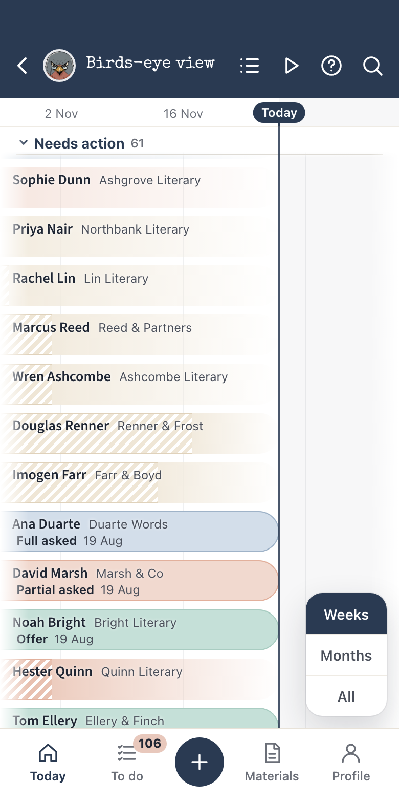

1 · All, fitted

before (v3.1)
after (v3.2)
2 · The With you pill

before
after
3 · Weeks, the switch at rest

before (always three)
after (one chip)
4 · The switch open
 before (no open state: same as at rest)
before (no open state: same as at rest)
after